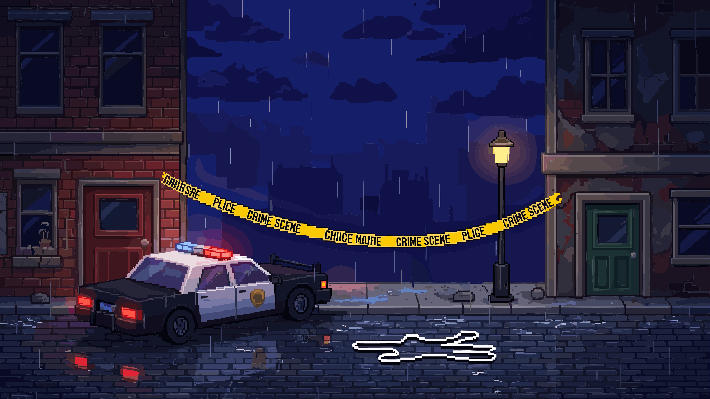

Part 1: Interactive Story Assignment

Part 1: Story Description - False Frames
The truth can set you free...or get you locked up.
My interactive story is a crime-based narrative set in New York City, where the user plays as a protagonist who witnesses a murder outside their apartment late at night. After seeing the crime, the protagonist becomes a suspect and must navigate a series of decisions across different locations in the city, including an alleyway, subway system, apartment, police station, and surrounding streets. The goal of the story is to gather enough information and make the right decisions to prove innocence while avoiding actions that increase suspicion.
The story unfolds through multiple branching paths that allow the user to investigate the crime, interact with characters, and decide how to respond to law enforcement. Players can choose whether to run, report the crime, search for clues, or trust certain individuals. These decisions affect how much evidence they collect and how they are perceived by others. While the story contains many branching paths and moments of exploration, all paths ultimately lead to one of two endings: either the protagonist successfully proves their innocence and the real murderer is caught, or they are wrongly accused and taken to prison. The structure encourages replayability by allowing multiple ways to reach each outcome.
The story has two possible endings: the protagonist proves their innocence and the real murderer is caught, or the protagonist is wrongly accused and sent to prison for a crime they did not commit.
Narrative Map
START: Apartment at Night
↓
Hear a loud argument outside your window
├── A) Look outside
│ ↓
│ Witness the murder in the alley
│ ↓
│ ├── A1) Go outside to investigate
│ │ ↓
│ │ Find a dropped clue near the scene
│ │ ↓
│ │ ├── Take the clue
│ │ │ ↓
│ │ │ Sirens begin approaching in the distance
│ │ │ ↓
│ │ │ ├── Run from the scene
│ │ │ │ ↓
│ │ │ │ Enter the subway to avoid being seen
│ │ │ │ ↓
│ │ │ │ ├── Talk to nervous witness → They describe the real killer → ENDING 1: Innocent
│ │ │ │ └── Ignore witness → Leave without information → ENDING 2: Wrongly Accused
│ │ │ │
│ │ │ └── Stay at the scene
│ │ │ ↓
│ │ │ Police arrive and question you
│ │ │ ↓
│ │ │ ├── Cooperate with police → Provide clue and clear story → ENDING 1: Innocent
│ │ │ └── Panic or lie → Inconsistent answers → ENDING 2: Wrongly Accused
│ │ │
│ │ └── Leave the clue
│ │ ↓
│ │ ├── Return later → Scene cleared, no evidence → ENDING 2: Wrongly Accused
│ │ └── Avoid the area → Never gather proof → ENDING 2: Wrongly Accused
│ │
│ └── A2) Call police from inside
│ ↓
│ ├── Stay on the phone → Calm and detailed report → ENDING 1: Innocent
│ └── Hang up early → Suspicious behavior → ENDING 2: Wrongly Accused
│
└── B) Ignore the disturbance
↓
The next morning, police question you
↓
├── Be honest → Cooperate and explain → ENDING 1: Innocent
└── Lie or act suspicious → Story doesn’t add up → ENDING 2: Wrongly Accused
Endings
Ending 1: Innocent - The protagonist gathers enough evidence, makes the right choices, and helps reveal the real murderer. The killer is caught and the protagonist is cleared.
Ending 2: Wrongly Accused - The protagonist makes choices that increase suspicion or fails to collect enough evidence. They are arrested and sent to prison for a murder they did not commit.